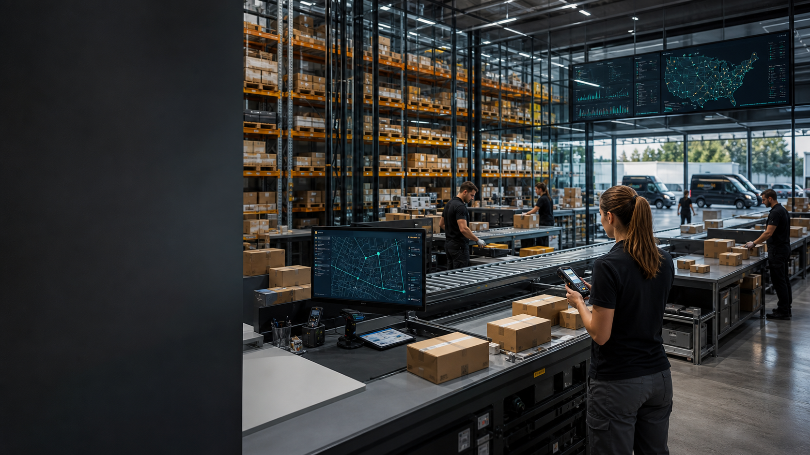

130
personas operando entre Estados Unidos y España

Fundada en 2009 | Los Ángeles + Zaragoza
TrackFlow coordina inventario, preparación de pedidos, transportistas y devoluciones para marcas e-commerce que necesitan operar entre Estados Unidos y España sin perder visibilidad de su logística.
130
personas operando entre Estados Unidos y España
2
almacenes en Los Ángeles y Zaragoza para almacenamiento, picking y preparación de pedidos
8
transportistas coordinados diariamente para operaciones de última milla
18–25%
del volumen operativo corresponde a devoluciones según cliente y mercado
Qué ofrecemos hoy
TrackFlow gestiona la operación desde que entra un pedido hasta que se entrega o vuelve como devolución: inventario, preparación, embalaje, transportistas, incidencias y logística inversa.
Gestión física de inventario para marcas e-commerce desde almacenes ubicados en Los Ángeles y Zaragoza.
Recepción de pedidos, picking, preparación de paquetes y coordinación con el transportista asignado.
Coordinación de envíos y entregas con una red de transportistas en Estados Unidos y España.
Seguimiento de entregas y resolución de incidencias entre almacenes, transportistas y clientes finales.
Gestión de devoluciones, revisión de casos y decisiones sobre recogida, reacondicionamiento o descarte.
Gestión de consultas relacionadas con pedidos, entregas, incidencias y devoluciones en ambos mercados.
Dos mercados
Los equipos de TrackFlow operan entre Los Ángeles y Zaragoza coordinando almacenes, transportistas, incidencias y devoluciones para marcas e-commerce en dos mercados distintos.
Sede ejecutiva y almacén para la operación logística en Estados Unidos.
Oficina tecnológica y almacén para la operación logística en España.
Equipos de almacén, última milla, logística inversa, atención al cliente y tecnología trabajan distribuidos entre ambos países.
FAQs
Respuestas directas sobre la operación logística, la cobertura geográfica, la última milla y las devoluciones para marcas e-commerce.
TrackFlow es una empresa de logística de última milla y gestión de almacenes para marcas e-commerce. Fue fundada en 2009 en Los Ángeles y opera con equipos y almacenes en Estados Unidos y España.
TrackFlow ofrece almacenamiento de inventario, preparación y embalaje de pedidos, coordinación de última milla, seguimiento de entregas, gestión de incidencias, logística inversa y soporte operativo para marcas y destinatarios.
TrackFlow opera en Estados Unidos y España, con almacenes en Los Ángeles y Zaragoza y equipos distribuidos entre ambos mercados.
TrackFlow trabaja con marcas e-commerce que necesitan externalizar o mejorar su operación logística, desde el almacenamiento del inventario hasta la entrega y gestión de devoluciones.
TrackFlow coordina envíos con una red de 8 transportistas en Estados Unidos y España y gestiona incidencias como entregas fallidas, paquetes perdidos o direcciones incorrectas.
TrackFlow gestiona devoluciones que pueden representar entre el 18% y el 25% del volumen operativo según cliente y país. El proceso incluye revisión de casos y decisiones sobre recogida, reacondicionamiento o descarte.
Cuéntanos cómo funciona hoy tu operación logística y qué desafíos necesitas resolver.